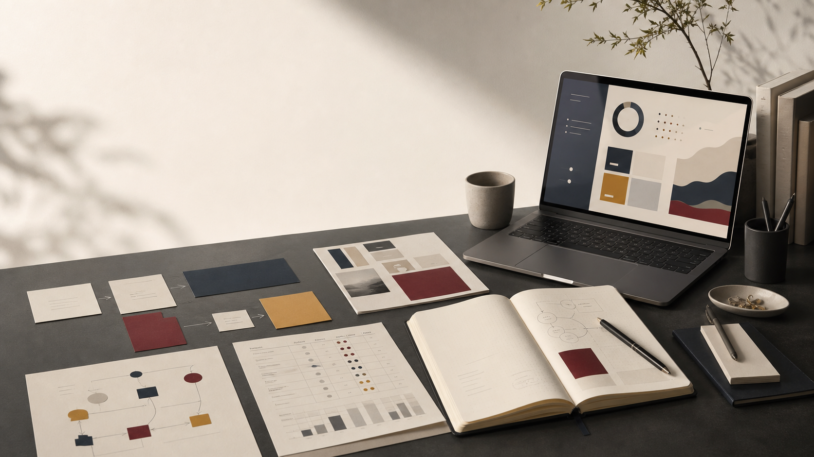

소규모 조직의 요청·결재·회계 흐름을 묶는 업무관리 구조 설계
강사 파견 업체의 업무 요청, 결재, 회계, 식사 장부, 강사료 흐름을 Django 기반으로 묶으며 겪은 설계 결정과 운영 문제를 정리한 글입니다.

Strategy notes for work systems
전략기획 관점에서 업무 프로세스, 데이터 구조, AI 자동화 실험을 글로 정리합니다.
업무 요청, 검토, 승인, 실행, 기록이 연결되는 내부 운영 구조를 고민합니다.
공공데이터, 문서 자동화, AI 활용, 데이터 구조화를 통해 실무에서 작동 가능한 업무 시스템과 서비스 기획 과정을 기록합니다.
업무를 어떤 관점으로 구조화했는지 먼저 보이도록 정리했습니다.
업무 문제를 정의하고, 프로세스와 데이터 구조로 정리한 대표 기록입니다.
강사 파견 업체의 업무 요청, 결재, 회계, 식사 장부, 강사료 흐름을 Django 기반으로 묶으며 겪은 설계 결정과 운영 문제를 정리한 글입니다.
정부지원사업, 입찰, 강사 모집 공고를 수집해 사업 적합도를 계산하고 보고서로 정리하는 Python 기반 업무 자동화 흐름입니다.
AI 응답, 사용자 선택, SQLite 저장, JSONL 추출을 연결하며 AI 판단과 사용자 검토가 함께 작동하는 내부 데이터 흐름을 설계한 기록입니다.
메모, 공모전 자료, README를 문제 정의와 시스템 설계 관점으로 재구성해 포트폴리오 글 초안으로 만드는 문서 자동화 실험입니다.
업무 시스템, 자동화, 데이터 구조 관점의 최근 글입니다.
업무 요청, 결재, 회계, 식사 장부, 강사료 흐름을 하나로 묶은 업무관리 시스템 설계 기록입니다.
Read more공고 수집, 정규화, 점수화, 보고서 생성을 연결한 Python 기반 업무 자동화 도구 기록입니다.
Read more사용자 선택, AI 응답, SQLite 저장, JSONL 추출을 연결한 데이터 흐름 설계 기록입니다.
Read more사용자 입력, AI 처리, 결과 재생 계층을 분리하고 느슨하게 연결한 시스템 설계 기록입니다.
Read more